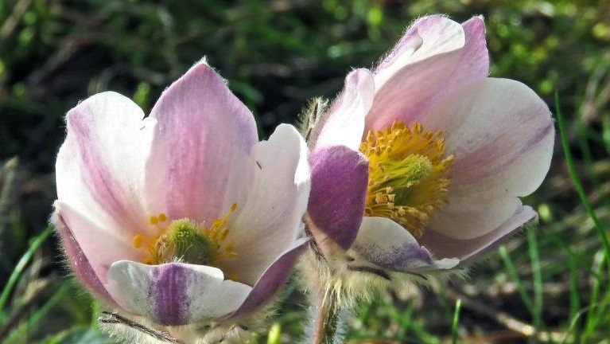

Det har varit rätt torrt här hela hösten, vintern och våren och nu har det varit väldigt mycket tal om att man inte ska få fylla på sina pooler till somamren ...
Vinter och kyligt inomhus
Spanien, 21/1 - 2024
I Spanien under vintermånaderna blir det rätt kyligt och fuktigt inomhus. Det är ofta varmare att sätta sig ute i solskenet än att hålla sig inne...
Hantverk på gatorna
Spanien, 14/8 - 2023
Nu under sommarmånaderna sätts det upp mängder med olika marknadsstånd längs gatorna på kvällarna med olika typer av hantverk..
Påskfirande och Sevilla
Spanien, 21/3 - 2023
Snart är påsken här och i Spanien firas den med stora processioner. Påskveckan kallas för Semana Santa och många är lediga hela den veckan i Spanien. Man skulle nog kunna säga att det är den största högtiden i Spanien..
Nyår i Spanien
Spanien, 12/12 - 2022
Nu har det varit regnigt i flera veckor här i Spanien och man börjar längta efter mer sol. Självklart behövs det regn och vatten men man blir ju lite trött på det dåliga vädret till slut..
Höst i paradiset
Spanien, 30/10 - 2022
Nu är hösten här och här i Spanien är den helt fantastisk! Jag har aldrig varit så förtjust i hösten för ..
Sommar och sol
Spanien, 9/5 - 2022
Äntligen börjar det bli stabilt väder med sommarvärme och sol här i Spanien! Som jag har längtat!..
Längtar efter vår och värme
Spanien, 1/2 - 2022
Nu har det varit ganska tråkigt väder här i Spanien i flera veckor så jag längtar efter solen, värmen och vår i luften...
Julmys i Spanien
Livet, 1/12 - 2021
Det här blir min första jul i Spanien och jag ser verkligen fram emot den. Julbelysningarna tänds på fredag och att döma av alla ljusslingor som redan satts upp verkar det bli spektakulärt...
Sol och bad på Costa de la Luz
Livet, 20/9 - 2021
Sommar i Spanien är helt underbart och jag har i sommar upptäckt den härliga Atlantkusten ”Costa de la Luz”. Det är inte så långt att åka från min del av Costa del Sol utan tar cirka en timme ner till Tarifa. ..

Flytt
Livet, 2/4 - 2021
Sidan har äntligen fått ett rejält face-lift och en helt ny sektion; MIN BLOGG! Jag har lite spännande nyheter att bjuda på..